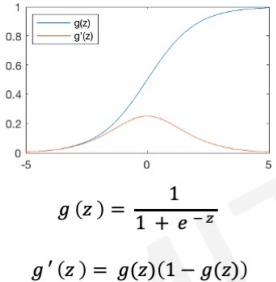
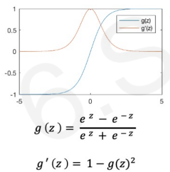
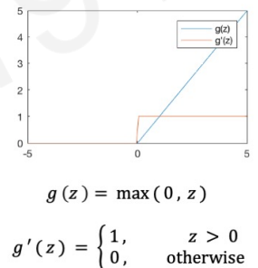
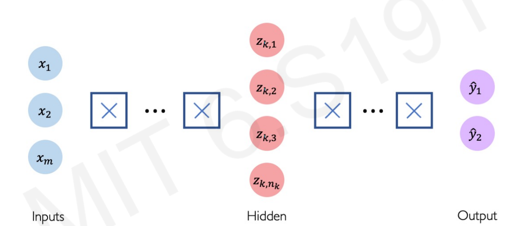
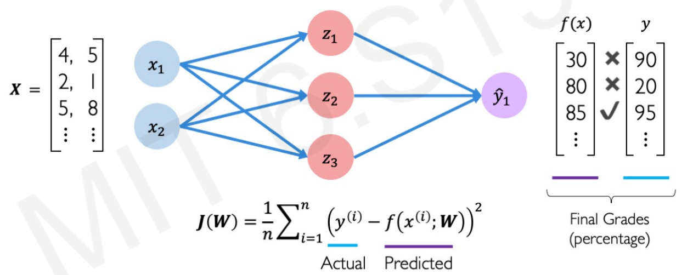
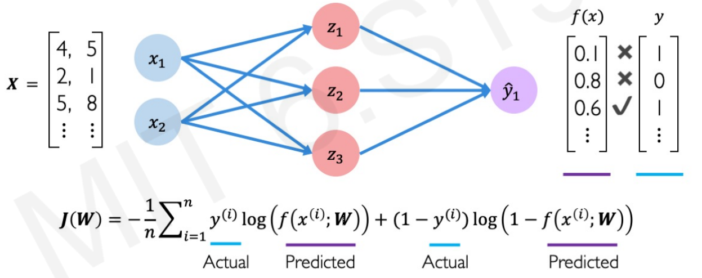

bootstrap your deep learning journey
question: how can we build model with so many parameters?
answer
Sigmoid function

m = nn.Sigmoid()
input = torch.randn(2)
output = m(input)
Tanh function

m = nn.Tanh()
input = torch.randn(2)
output = m(input)
Relu function

m = nn.Relu()
input = torch.randn(2)
output = m(input)
Dense layer: all inputs are densely connected to all outputs
input = torch.randn(128, 20)
dense_layer = nn.Linear(20, 30)
relu = nn.ReLU()
output = relu(dense_layer(input))
print(output.size()) #=> torch.Size([128, 30])
Dense layer: all inputs are densely connected to all outputs
Finally, we come out with Deep Neural Network
layer i => layer i+1: $ \mathbf{z}_{i+1} = g(\mathbf{b}^{(i)} + \mathbf{W}^{(i)} \mathbf{z}_{i}) $
input = torch.randn(128, 20)
hidden_layer = nn.Linear(20, 30)
relu = nn.ReLU()
hidden_unit = relu(hidden_layer(input))
output_layer = nn.Linear(30, 2)
output = relu(output_layer(hidden_unit))
print(output.size()) #=> torch.Size([128, 2])
the purpose of activation functions is to introduce non-linearities into the network
mean squared error loss: used for continuous numbers
cross entropy loss: used for probability between 0 and 1
slides are at https://github.com/MrQianJinSi/bootstrap-deeplearning
{kind=link}